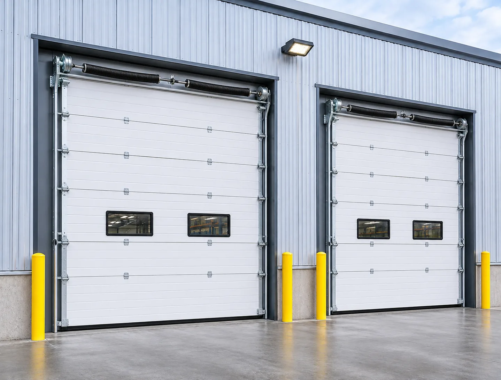
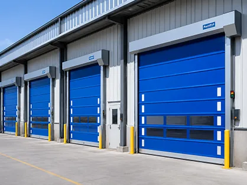
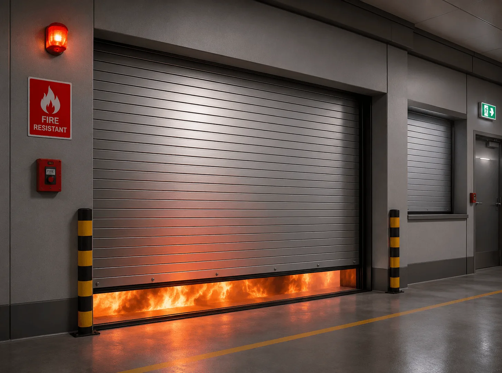
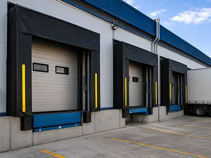

أبواب صناعية ومعدات تحميل وتفريغIndustrial Doors and Loading Equipment
أبواب صناعية ومعدات تحميل وتفريغ من مدار رندا للمصانع والمستودعات، مع التركيب والصيانة في جميع مدن القصيم.Industrial doors and loading dock equipment from Madar Randa for factories and warehouses, with installation and maintenance across Al-Qassim.
الأبواب الصناعية ومعدات التحميل لدى مدار رنداIndustrial Doors and Loading Equipment at Madar Randa




الأبواب المقطعية الصناعية (Industrial Sectional Doors)Industrial Sectional Doors
جهّز مداخل المصانع والمستودعات بأبواب مقطعية صناعية تتكون من ألواح مترابطة تتحرك لأعلى على مسارات داخل المنشأة. تتوفر بخيارات للعزل والتشغيل الكهربائي، مع أنظمة رفع تناسب مساحة الموقع.Equip factory and warehouse entrances with industrial sectional doors made of interlocking panels that move upward on tracks inside the facility. Available with insulation and electric operation options, and lifting systems to suit the site space.
الخاماتMaterials
ألواح معدنية معزولة وفق مواصفات المنتج.Insulated metal panels according to product specifications.
العزلInsulation
خيارات تساعد على تقليل انتقال الحرارة والصوت.Options that help reduce heat and sound transfer.
التصميمDesign
مقاسات وأنظمة رفع تناسب الفتحات الصناعية.Sizes and lifting systems to suit industrial openings.
التشغيلOperation
محركات وتجهيزات أمان تتناسب مع وزن الباب ومعدل استخدامه.Motors and safety fittings matched to the door weight and frequency of use.
الأبواب المقطعية الصناعية (Industrial Sectional Doors)Industrial Sectional Doors
الأبواب السريعة PVCHigh-Speed PVC Doors
حافظ على انسيابية العمل داخل مصنعك أو مستودعك مع أبواب PVC السريعة، المصممة للفتح والإغلاق المتكرر. تساعد هذه الأبواب على تقليل مدة بقاء الفتحات مفتوحة بين مناطق التشغيل.Keep work flowing smoothly in your factory or warehouse with high-speed PVC doors, designed for frequent opening and closing. These doors help reduce how long openings stay open between operating areas.
الخاماتMaterials
ستائر PVC مقواة تناسب الاستخدام الصناعي.Reinforced PVC curtains suited to industrial use.
التشغيلOperation
فتح وإغلاق سريع بمحركات كهربائية حسب الموديل.Fast opening and closing with electric motors, depending on the model.
التحكمControl
خيارات لأزرار التشغيل ووسائل التحكم الآلي المتوافقة.Options for push buttons and compatible automatic control methods.
الأمانSafety
تجهيزات وحساسات تساعد على اكتشاف العوائق وفق نظام الباب.Fittings and sensors that help detect obstacles, depending on the door system.
الأبواب السريعة PVCHigh-Speed PVC Doors
الأبواب المقاومة للحريقFire-Rated Doors
وفّر أبوابًا مناسبة للمواقع التي تتطلب فصل مناطق المبنى والحد من انتشار الحريق وفق اشتراطات السلامة. تقدم مدار رندا خيارات من الأبواب المقاومة للحريق، بمقاسات وتجهيزات تتحدد بحسب متطلبات المشروع وتصنيف الباب.Provide suitable doors for sites that need to separate building zones and limit the spread of fire in line with safety requirements. Madar Randa offers fire-rated door options, with sizes and fittings defined by the project requirements and the door rating.
الخاماتMaterials
مكونات معدنية ومواد مقاومة للحريق حسب نظام الباب.Metal components and fire-resistant materials depending on the door system.
التصنيفRating
درجة مقاومة الحريق وفق متطلبات الموقع ووثائق المنتج.Fire-resistance rating according to site requirements and product documentation.
التشغيلOperation
أنظمة فتح وإغلاق تتناسب مع التصميم المعتمد.Opening and closing systems that suit the approved design.
التحكمControl
خيارات للربط بأنظمة إنذار الحريق في الموديلات المجهزة لذلك.Options to connect to fire alarm systems on models equipped for it.
يجب التحقق من تصنيف مقاومة الحريق وشهادات المنتج واشتراطات التركيب قبل اعتماد الباب للمشروع.The fire-resistance rating, product certificates and installation requirements must be verified before the door is approved for the project.
معدات تحميل وتفريغ للمستودعات والمصانعLoading & Unloading Equipment for Warehouses and Factories
توفر مدار رندا تجهيزات لأرصفة التحميل تساعد على تسهيل نقل البضائع بين الشاحنات والمستودعات، وتقليل تعرض مناطق التحميل للعوامل الخارجية.Madar Randa supplies loading dock equipment that makes it easier to move goods between trucks and warehouses, and reduces the exposure of loading areas to outside conditions.
رافعة هيدروليكية لرصيف التحميلHydraulic Dock Leveler
تساعد الرافعة الهيدروليكية، أو منصة التحميل الهيدروليكية، على تعويض فرق الارتفاع بين أرضية المستودع وأرضية الشاحنة، لتسهيل تحميل البضائع وتفريغها باستخدام معدات المناولة المناسبة.A hydraulic dock leveler, or hydraulic loading platform, bridges the height difference between the warehouse floor and the truck bed, making it easier to load and unload goods with suitable handling equipment.
التشغيلOperation
نظام هيدروليكي للرفع وضبط مستوى المنصة.A hydraulic system for lifting and leveling the platform.
التصميمDesign
سطح تحميل متين ومقاوم للانزلاق.A durable, anti-slip loading surface.
الحمولةCapacity
اختيار قدرة التحميل والمقاسات وفق احتياجات الموقع ومواصفات الموديل.Load capacity and dimensions chosen according to site needs and model specifications.
الأمانSafety
تجهيزات حماية مناسبة لنظام الرفع والتشغيل.Protection fittings suited to the lifting and operating system.
رافعة هيدروليكية لرصيف التحميلHydraulic Dock Leveler
إطار ربل خارجي لأبواب التحميلExternal Dock Seal for Loading Doors
قلّل دخول الأتربة والهواء والحرارة والأمطار أثناء تحميل البضائع وتفريغها مع إطارات الربل الخارجية (Dock Seals)، التي تُركب حول أبواب المستودعات لتحسين الإحكام بين مؤخرة الشاحنة والمدخل.Reduce dust, air, heat and rain getting in during loading and unloading with external dock seals, installed around warehouse doors to improve the seal between the back of the truck and the entrance.
الخيارات المتاحة:Available options:الخاماتMaterials
إطار مطاطي متين يناسب ظروف التشغيل.A durable rubber frame suited to operating conditions.
التصميمDesign
خيارات جانبية وعلوية لإحكام منطقة التحميل.Side and top options to seal the loading area.
الحمايةProtection
يساعد على الحد من دخول الأتربة والهواء والعوامل الجوية.Helps limit dust, air and weather getting in.
التركيبInstallation
مقاسات وتجهيزات تناسب فتحة الباب وطبيعة الشاحنات.Sizes and fittings to suit the door opening and the trucks used.
إطار ربل خارجي لأبواب التحميلExternal Dock Seal for Loading Doors
تشغيل وأمان يناسبان طبيعة عمل منشأتكOperation and Safety Suited to Your Facility
أنظمة تشغيل مناسبةSuitable Operating Systems
محركات وأنظمة هيدروليكية تُختار وفق نوع الباب أو معدات التحميل، وأبعادها ومعدل الاستخدام.Motors and hydraulic systems chosen according to the door or loading equipment type, its dimensions and frequency of use.
وسائل التحكمControl Methods
خيارات لمفاتيح وأزرار التشغيل ووسائل التحكم الآلي المتوافقة مع النظام.Options for switches, push buttons and automatic control methods compatible with the system.
تجهيزات الحمايةProtection Fittings
حساسات ووسائل حماية وتجهيزات أمان تتحدد وفق نوع المنتج ومتطلبات التشغيل.Sensors, protection devices and safety fittings defined by the product type and operating requirements.
تختلف الخصائص وتجهيزات الأمان والطوارئ بحسب الموديل والمواصفات الفنية للمشروع.Features and safety and emergency fittings vary by model and the project's technical specifications.
من معاينة الموقع إلى التشغيل والتسليمFrom Site Inspection to Commissioning and Handover
معاينة الموقعSite Inspection
نراجع أبعاد المداخل وأرصفة التحميل وطبيعة الاستخدام ومتطلبات التشغيل.We review the dimensions of entrances and loading docks, the type of use and operating requirements.
اختيار النظام والمواصفاتChoosing the System & Specifications
نساعدك في تحديد نوع الباب أو معدات التحميل والمقاسات والخامات والتجهيزات المناسبة.We help you choose the door or loading equipment type, dimensions, materials and suitable fittings.
التوريد والتركيبSupply & Installation
نجهز المنتجات وفق المواصفات المعتمدة، وننفذ أعمال التركيب والتوصيلات المطلوبة.We prepare products to the approved specifications and carry out the installation and required connections.
الاختبار والتسليمTesting & Handover
نختبر التشغيل وتجهيزات الأمان ذات الصلة قبل تسليم النظام.We test the operation and related safety features before handing over the system.
بعد التركيب، يستمر دعمنا من خلال خدمة ما بعد البيع والضمان.After installation, our support continues through our after-sales service and warranty.
ماذا يقول عملاؤنا؟What Do Our Clients Say?
اطلع على تجارب عملائنا مع خدمات مدار رندا من خلال تقييماتهم الحقيقية المنشورة على Google.See our clients' experiences with Madar Randa services through their genuine reviews published on Google.
الأسئلة الشائعة حول الأبواب الصناعية ومعدات التحميلFAQs About Industrial Doors & Loading Equipment
جهّز مداخل منشأتك ومناطق التحميل مع مدار رنداEquip Your Facility Entrances and Loading Areas with Madar Randa
أرسل صورة المدخل أو مخطط المشروع، واحصل على عرض سعر يناسب منشأتك.Send a photo of the entrance or your project plan, and get a quote that suits your facility.